|
PART II:
The Space Scene |
|
Step 14: Planet Two |
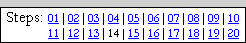 |
We will be creating
our second planet completely from scratch. This is a lengthy step with lots of
directions, so read the directions carefully and follow along as we will cover
lots of great Photoshop tools and techniques. The planet we are going to
create will resemble the planet Saturn,
complete with an awesome set of rings, but will have colorful bands of gas like Jupiter.
Yeah, I know, I can't wait to get started either.
- Open your Space file in Photoshop
- Turn off the visibility of all of your current layers (you should see
the checkerboard)
- Insert a new layer and name it Planet2Original (the reason
we are giving this layer such a strange name will become obvious in just a
moment)...
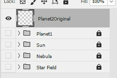
- Select the Elliptical Marquee Tool
The first thing we need is a circle to put our bands of gas in. For
everything to work correctly, we are all going to have to use the same sized
circle, so let's first make sure everyone is using the same measurements.
- Click Edit and point at Preferences (at the very bottom) and click Units &
Rulers...
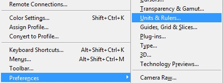
- In the Units section, click the drop-down arrow next to Rulers
and select Pixels...
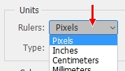
If Pixels is already selected then leave it alone
- Click OK
- Place your cursor near the upper left hand corner of your image
(but do not place it on the very corner or you will have problems later)...
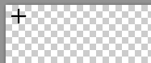
- Press and hold the Shift key then click and drag down and to
the right until you have created an 800 pixel Wide x 800 pixel High circle...
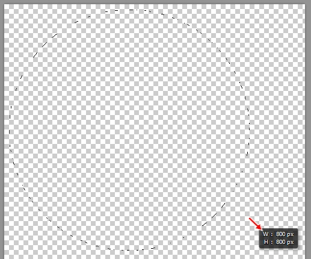
Keep an eye on the black box pointed at with the red arrow above as this
will let you know how big of a circle you are creating (yes, this is a big
circle - you will resize it later) and release the mouse button and then
the Shift key
when you have an 800x800 circle (if you can't get it to go exactly to 800 px
don't worry about it - just get as close to 800 as you can)
- Press D to set your foreground color to black
- Press Alt+Backspace to fill the circle
with black
At this point we are going to do some quick maintenance on our file to help
avoid problems later on. This Step works much like the previous two Steps in
that you will need to keep the circle you just created selected for most of
this Step. The problem is that we are going to be doing some extensive
modifications to our planet and the edges of our circle will become distorted.
Let's make a copy of our current layer so that we always have a layer with our
original circle on it just in case we lose our selection and need to get it back.
- Right-click the Planet2Original layer and select Duplicate
Layer...
- Name the new layer Planet2...
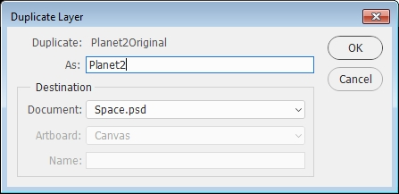
- Click OK - notice that Photoshop places this new
layer above the Planet2Original layer...
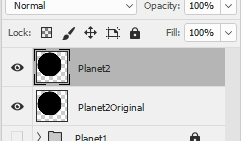
This is what we want at this point as
the Planet2Original layer exists just in case we mess up
Your planet should remain
selected:
from direction 9 through direction 49,
from direction 65 through direction 76,
from direction 98 through direction 119.
If you happen to deselect your planet, you
can reselect it by pressing and holding the Ctrl key and clicking on
Planet2Original's layer thumbnail
- Lock the Planet2Original layer
- Make Planet2 the active layer
- We will be using a gradient to simulate the bands of gas that wrap
around the surface of the planet, so click the Gradient Tool...

If you do not see the Gradient Tool, just right-click the Paint Bucket Tool
and select the Gradient Tool
- Click the drop-down arrow on the Click to edit the gradient
box...
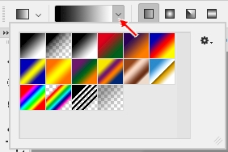
to open the gradient selection window
- Click on the tiny gear...
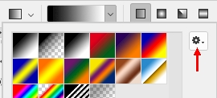
to open the gradient fly-out menu
-
In the list of gradient presents click on Noise Samples...
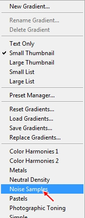
This set of gradients will give us a planet with lots of thin bands of color
- An alert window will open asking you if you really want to replace the
current gradients with the Noise gradients...
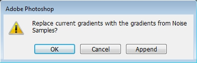
Click OK - notice that the gradient choices are now different...
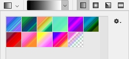
- Click the Sunrise gradient...
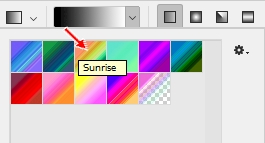
If you do not like the colors in this gradient don't worry, you will change them later to something
different (this just gives us a nice,
simple set of various colors to work with)
- Make sure Linear Gradient is selected...
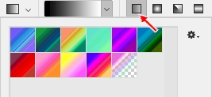
- Click on the gradient box...
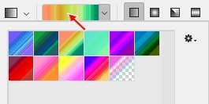
to bring up the gradient editor...
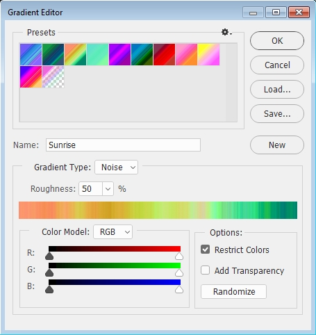
- Make sure the Restrict Colors checkbox is selected...
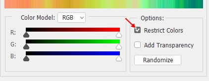
This option will prevent our image from having too much color in it which
could make our planet look unnatural
- Click OK
- To apply the gradient, make sure you still have the black circle
selected (you should see the moving dashed line around it) then click just
above your circle and press and hold the Shift key on the keyboard as you
drag down to create a line stopping just below the black circle...
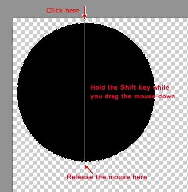
Your gradient should now be applied to your circle...
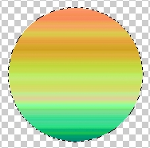
So far everything is looking pretty good, but if you look at real gas
giants out in space (like Saturn and Jupiter) you notice that they have
distortions in their bands of gas...

In other words, they do not have clean, straight
lines across their surfaces. Let's take a quick minute to give our planet a little
character by distorting the lines just a bit.
- Click Filter then point at Distort and click Ripple...
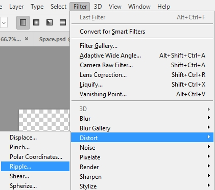
to open the Ripple window...
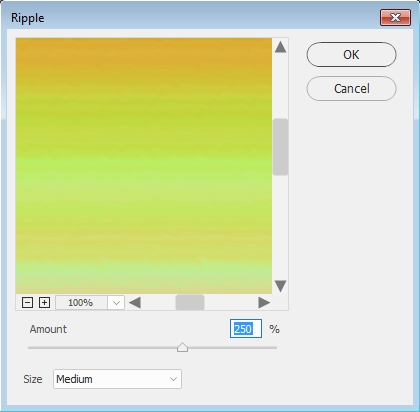
- Set the Amount to something between 200 (any less and you
won't be able to see the ripples after you resize your planet) and 300 (any more and the surface just begins to look like mush) - I'm going to use
250 - and leave the Size set to Medium
- Click OK
Our lines no longer look perfect, but they are still pretty straight across
the planet. Let's add some waviness to our clouds.
- Click Filter then point at Distort and click Wave to
open the Wave window...
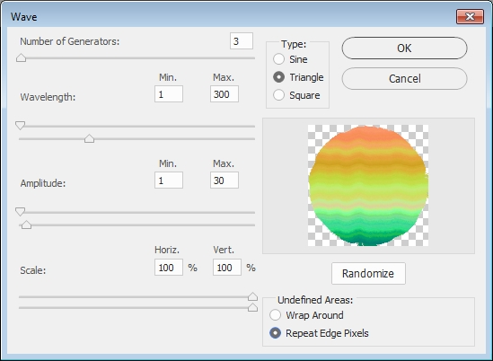
- Use the above settings as a starting point, and adjust the numbers until
you get something that you like (avoid simply using my numbers as you want
your planet to be unique and if everyone uses the same numbers then all
of the planets will look the same), but keep the following in mind:
- Set Type, Scale, and
Undefined Areas to the same settings as the image above
- Number of Generators determines how large the
waves are - setting this number too high will make your planet look like a
cartoon, so try each number between 1 and 5 to see what gives you a result
you like (your waviness should look something similar to the image above)
- Set Wavelength Max. to any number
between 100 (closer together waves) and 400 (more spread out waves)
- Set Amplitude Max. to any number
between 20 (shallow waves) and 50 (deep waves)
I'm going to use the numbers in the above image - keep in mind that we will be resizing our planet later in this step so
it is ok if the waves are a little exaggerated right now, they will look
fine when we resize
- Click OK
You should now have some nice, wavy, slightly distorted lines that more
closely resemble the actual surface of a gas giant...
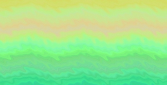
Keep in mind that since you (should have) used different settings than me
that your bands of gas will not look exactly like mine.
You may also notice that your planet's edge appears to have some chunks
taken out of it...
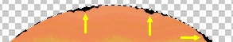
Don't panic - this is actually what we want at this point. The ripple and
wave filters that we applied have distorted our edge, and we will worry
about fixing this a little later on. For now, just keep going.
Scroll back up to the picture of Jupiter and Saturn and notice that the actual
surface of both planets have a lot more distortions on their surface than our
planet does. Let's take a quick second to add in some additional variations to
our clouds (and learn some new tools in the process).
- Click Filter and then click Liquify...
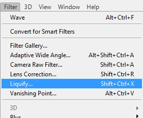
to open the Liquify window...
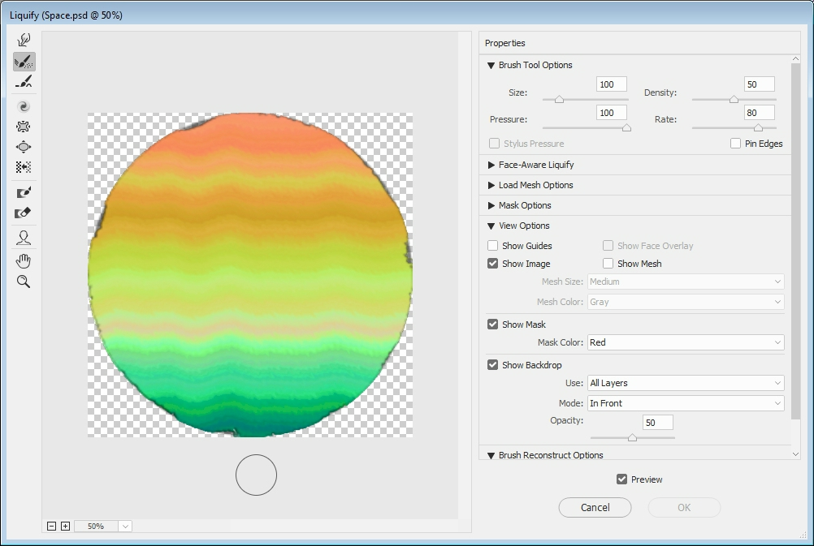
Yes, it's a big window
- In the Liquify window, press the W key to activate the Forward
Warp Tool...
- Use the Zoom tool at the bottom of the Liquify window to change
the zoom to 100%...
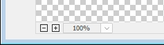
- Under View Options, deactivate the Show Backdrop
checkbox...
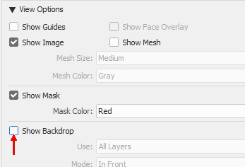
This will allow us to clearly see our changes without the background
blending in to our surface
- Under Brush Tool Options, make the following settings...

- Click and drag quickly in your clouds in various directions and at
various lengths to simulate variations in the surface gas...
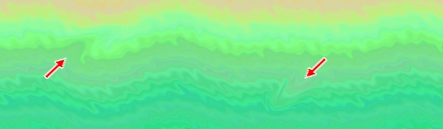
DO NOT go crazy with your warps - try to space them out as we will be
decreasing the size of the brush in the following directions and adding
additional warps of various sizes to give our planet a lot more character
- Use the scroll bars to move your planet around and warp various
locations - be careful not to draw too close to the edges of your planet as
you do not want your warps to stretch out of the basic circle of your planet
- Press the [ key on your keyboard twice to decrease the size of
your brush from 35 to 25
- Add in some additional warps - again, don't over do it
- Press the [ key on your keyboard twice to decrease the size of
your brush from 25 to 15
- Add in some additional warps - this time you can make as many as you
like (you can even draw onto some of the previous warps)
- Press the ] key ten times to increase the brush size to 80
- Select the Pucker Tool...
This tool pulls whatever is within your brush circle
in to the center of the circle
- Change the Brush Rate to 30...
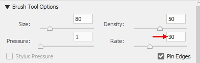
This controls how quickly the surrounding area is pulled into the center of
your circle - if this is set too high then you pretty much have no control
over how much pucker you apply
- Click around your planet in a few different places - this tool
works great to repair any areas that you went crazy on - to add some
additional distortions to your clouds (keep in mind that the longer you
press the mouse button on one spot the more Photoshop will draw the
surrounding area into your circle) - once again, do not go crazy with this
The Pucker Tool is a great way to create thinner bands of gas...
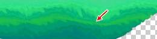
Simply click and hold the Pucker Tool as you drag along a band
of gas to thin it out.
- Look back over your planet and make sure that you are happy with the
warps you have created - you should have something similar to the image
below...
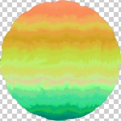
When you are happy with your planet, click OK to exit the Liquify window
What might be awesome at this point is to add in a nice storm such as the
Great Red Spot on Jupiter...
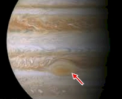
This spot on Jupiter is actually a huge hurricane that has been
churning for decades, maybe even centuries.
Let's start by creating a selection to contain our storm.
- Select the Elliptical marquee tool - make sure Feather is set to 0
- Draw a circle over the empty area of your image (NOT on your planet) that is
200px
wide by 100px high...
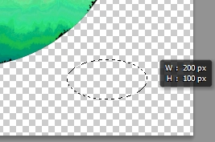
Don't waste a lot of time trying to get your selection to be exactly 200x100 -
just get close
- Determine where on your planet you would like your storm to be - it
should on the same side of the planet as your sun (in other words, if you
put your sun on the right side of your image like I did then you want your
storm to be on the right side of your planet since we are going to shade the
other side later in this step and you want your storm to be visible) and looks best when placed in darker bands of color
(if you place it over light colored clouds it will be difficult to see when
you resize your planet)
- Click inside the selection (your cursor should look like this:
while over the selection) and drag it onto the area of your planet that you
chose...
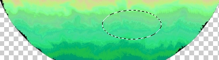
- Click Filter then point at Distort and click Twirl...
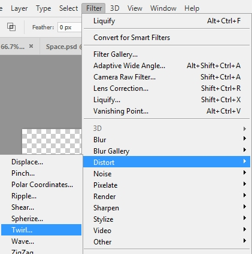
to open the Twirl window...
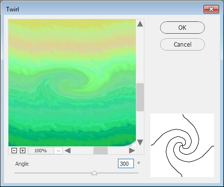
- Set angle to 300 degrees as in the image above
- Click OK
- Click on your selection oval and drag it to the right (or left depending
on how close you are to the edge of your planet) 100 pixels - as you drag
Photoshop will display an indicator box letting you know how far left/right
and up/down you are moving the selection...
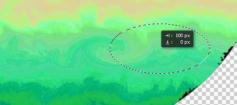
In the graphic above,
indicates that I have moved my selection oval to the right, and
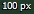
let's me know that I have moved it 100 px (if you need to move your oval to the left to keep it on the
planet that is fine, just know that in that case the tiny little arrow will be
pointing to the left) and
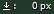 indicates that I have not moved it up or down (be
sure you don't move your selection oval up or down!)
- Reapply the Twirl filter (use the same settings as before) - you should now have something like this...
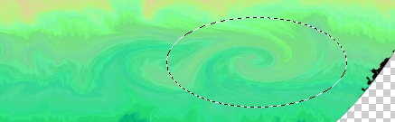
- Click on your selection oval and drag it 50 pixels back toward your
original twirl so it sits between the two twirls you just
made...
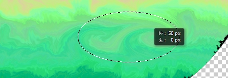
- Click Filter then point at Distort and click Twirl to reopen the Twirl
window, but this time set the angle to 400 degrees...
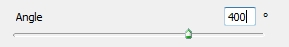
This should combine the first two twirls into one large twirl...
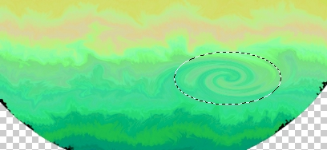
- Press Crtl+D to deselect the oval
You may be wondering why we didn't just create one large twirl at an angle of 400
and be done with it. Remember that the bands of gas on our planet (and on the
real gas planets in our solar system) are created due to the planet spinning
really fast and, because there is no solid ground to provide friction, stretching the gas
across the surface of the planet. Because of this, a simple round storm would
look out of place. By applying two small twirls and merging them with one large
twirl we are able to create a storm that is definitely noticeable, but that
blends into the surrounding clouds and looks stretched out so that it could
actually be on our planet and not look like some weird artificial storm we
stuck on same fake planet using Photoshop (and now you know why the Great Red
Spot on
Jupiter is an oval...you're welcome).
Let's make one more minor adjustment before we move on. If you look at the
Great Red Spot on Jupiter in the image above you will notice that the center is
far less defined (it's blurrier) than the center of our storm. We have a
quick fix we can use to soften up the center of our storm.
- Click the Smudge Tool...
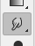
You may have to right-click the Blur Tool and then select the Smudge Tool...
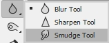
The Smudge Tool does exactly what the name says: it smudges. It works very
much like what happens when you stick your finger in a dab of paint and move
it around - the paint smudges (sorry, really no better way to say it).
- Choose the Soft Round brush and make the Size 70 px
- Click in the center of your storm and move your mouse back and
forth slightly (do not go too far or you will begin to remove the oval shape
of the storm) until your center is well blended - it should look something
similar to the image below...
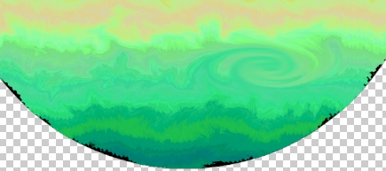
Now let's give our planet a quick spherize so that the bands of gas seem to be
moving around an actual round surface instead of sitting across the flat surface
they actually do. We will do this the same way we did it on the first planet. We
need to first reselect our planet shape.
- Press and hold the Ctrl key and click on the Planet2Original
layer's thumbnail...
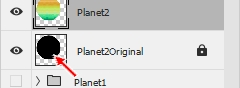
This will select all of the non-transparent pixels on the layer - in other
words, it selects the black circle (see, I told you the Planet2Original
layer would come in handy)
- Make sure the Planet2 layer is the active layer
- Click Filter then point at Distort and click Spherize
- Set the Amount to 100% and click OK - this should
smooth out most of the jagged areas along the edge of your planet
Your planet should look pretty nice, but depending on what settings you
used when you applied the Wave your edge may have some distorted sections...
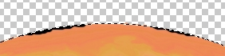
Unfortunately,
there are no gas planets with chunks taken out of their edges like
this (remember that the missing pieces are black because the Planet2Original
layer is filled with black and is still sitting behind our Planet2 layer), so let's take a second to fix any of these issues.
- Click Select then point at Modify and click Contract...
This will open the Contract Selection window
- Set Contract By: to 5 pixels...
- Click OK
Look carefully at your planet's edge - contracting by 5 pixels should fix most
edge distortions, but you may need to contract a little more...
- If your planet still has edge problems, simply repeat the Contract
Selection until all of your problem areas are outside your selection circle
- Once you are happy with your selection circle, click Select then
click Inverse...
This will select everything on your Planet2 layer EXCEPT the part of the
planet you want to keep
- Press the Delete key on the keyboard to remove everything on the
layer except your planet - you should now see a black outline around your planet...
This black outline is the Planet2Original layer, which you will remember is
totally black and now slightly larger than our Planet2 layer. Since the edge
of our Planet2 layer is now smooth, we can turn off the visibility of the
Planet2Original layer.
- Turn the visibility of the Planet2Original layer off
- Press Ctrl+D to deselect everything
You should now have an awesome looking gas planet with a nice smooth edge
(if you still have some small nicks here and there in your edge don't worry
about it as they will not be noticeable when we resize the planet). Since this planet is covered with all kinds of strange gasses and doesn't
have clouds like we do on earth, we don't have to worry about creating cloud
layers and just need to apply a nice glow to
the Planet2 layer.
- Make the Planet2 layer the active layer
- At the bottom of the Layers panel click the fx icon...
- Click Outer Glow...
to open the Layer Style window with Outer Glow selected
- Make the following adjustments:
Blend Mode: Normal
Opacity: 75%
Noise: 0%
Technique: Softer
Spread: 0%
Size: 70 px
Leave all of the Quality settings alone
- Click on the title bar for the Layer Style window...
and drag it so that you can see most of your planet
- Click the Set color of glow box...
to open the Color Picker (Outer Glow Color) window
- Click on the title bar for the Color Picker (Outer Glow Color)
window and drag it so that you can see most of your planet
- Click the eyedropper on a color near the center of your planet's bands of color...
- Click OK in the Color Picker (Outer Glow Color) window
- Click Inner Glow to activate it and use the following settings:
Blend Mode: Normal
Opacity: 40%
Noise: 0%
Technique: Softer
Source: Edge
Choke: 0%
Size: 50 px
Leave all of the Quality settings alone
- Click the Set color of glow box (same box from direction 82) and click the eyedropper on a band of
color of your choice - do not use the same color you used for the Outer Glow
but instead choose something different to give your planet a unique
combination of colors
- Click OK in the Color Picker (Inner Glow Color) window
- Click OK in the Layer Style window
- Let's give our planet a slight tilt - press Ctrl+T to enter
Transform mode...
Transform mode allows us to rescale and rotate our
selection
- Place your cursor just off one of the corners until you get the
curved double-headed arrow...
- Click and drag to rotate your planet - how much you rotate
it is up to you (remember that you can always flip and rotate it more later)...
- Press the Enter key on the keyboard to apply the transform
We still need to add in a shadow. Since we applied a layer style, we are
unable to simply draw over our planet with a paintbrush (we will succeed in
drawing over the planet, but the inner and outer glows will remain unchanged).
We need to first convert our Planet2 layer into a raster layer - or a layer with
no extra formatting applied - and then add in the shadow.
- Right-click your Planet2 layer in the Layer panel (be careful to
NOT right click on the thumbnail as this will bring up a completely
different set of options) and click Rasterize Layer Style...
Notice that the layer no longer has the fx applied to it...
This means that it is now just a regular layer
- Lock the Planet2 layer
- Insert a new layer and name it Shadow
- Turn on the visibility of the Star Field layer group (the black
background will allow us to see our Outer Glow better)
- Press and hold the Ctrl key and click on the Planet2
layer's thumbnail to select your entire planet - notice that much of the outer
glow is not included...
We need to adjust our selection here so that the outer glow is included.
Otherwise, when we add our shadow the glow will remain unchanged and will still
be visible on the shadow side of the planet...which would look dumb.
- Click on the Marquee Tool (it should still be set to Elliptical
Marquee, but may be on another setting) and click the Select and Mask
button in the options bar
- In the Refine Edge window, change Shift Edge to 30%...
- Click OK - notice that your selection now includes the outer glow...
- Press D on the keyboard to make black your foreground color
- Choose the Brush Tool
- Change the brush selection to Soft Round, and change the Size
to 500 px
- On the Brush Tool options bar, make sure
Opacity (the depth of color)
and Flow (the amount of color you drop each time
you stroke) are both set to 50%...
- Change the Zoom setting to 25%...
- Make sure the Shadow layer is the active layer and click
on one side of your planet and drag to the other side...

Keep your cursor half-on your planet as in the image above and make sure you
are shading the side of the planet AWAY from the sun (notice
how the image above indicates that my Sun is in the upper right-hand corner of
my image so I'm shading the bottom left of my planet) - you should now have something like this...
Notice that you have a slight shadow - yes, it is supposed to be that
subtle, you will make it darker in the following directions
- Press the ] key on the keyboard once to increase the size of your
brush to 600
- Repeat direction 107, but put slightly less of the cursor
on your planet - your shadow should now be slightly darker...
- Press the ] key on the keyboard once to increase the size of your
brush to 700
- Repeat direction 107, but put slightly less of the cursor
on your planet
- Press the ] key on the keyboard once to increase the size of your
brush to 800
- Repeat direction 107, but put slightly less of the cursor
on your planet
- Press the ] key on the keyboard once to increase the size of your
brush to 900
- Repeat direction 107, but put slightly less of the cursor
on your planet
- Press the ] key on the keyboard once to increase the size of your
brush to 1000
- Repeat direction 107, but put slightly less of the cursor
on your planet - you should now have a nice, soft shadow...
Notice that because the planet is selected that we only drew over the planet
so that the stars in the image are still
shining just as bright as they were before we began this Step
- Lock the Shadow layer
- Press Ctrl+D to deselect your planet
Things are looking pretty good, but at this point all of your planets look
pretty much the same, which is pretty boring. Let's take a second to modify the color of
your
planet so that everyone has a unique planet. We could simply take our Planet2
layer and edit the colors directly, but doing so would permanently change our
planet. If we close our image or continue on with Step 15,
we would be
unable to get our planet back to the way it currently looks or to modify any changes
we made. Luckily for us, Photoshop offers a way to modify a layer without doing
so permanently. This can be done with an adjustment layer.
Adjustment layers are layers that sit over other layers and make some sort of
change to them. The good thing about adjustment layers is that unlike
actually changing a layer, changes made using adjustment layers can be
quickly and easily undone (by deleting the adjustment layer) or easily
changed (by modifying the adjustment layer).
We need to give our planet a color scheme we like at this point because
later we will be adding a ring system and will need to apply color to the
rings based on the color of our planet's swirling clouds. We are going to
need a new layer that sits above our Planet2 layer.
- Turn off the visibility of the Shadow layer - this will allow you
to
better see what impact the color change is having on your planet
- Make Planet2 the active layer
- At the bottom of the Layer panel click the Create new fill
or adjustment layer icon...
- Click Hue/Saturation...
to open the Hue/Saturation Property panel...

- Drag the Hue slider (red arrow in the image above) left and right and keep an eye on your planet - notice
your planet will actually change colors - and stop when you get to a color
scheme you like...

No, your planet does not have to look like mine...again, choose something that
YOU like
- Drag the Saturation slider left and right and determine if you want
your colors to be more or less vivid
The adjustment layer we are creating actually impacts all layers sitting under it, so we need to limit its
effect to only the layer immediately below it.
- Look at the bottom of the Hue/Saturation Properties panel and locate the icon
pointed at with the red arrow below...
and
click it
Clicking the above icon creates a Clipping Mask.
Clipping Mask is just a fancy way to say that
any adjustments we make will be applied only to the
layer directly below the current layer. Photoshop actually
has a couple of ways to let us know that we are using a Clipping Mask. Look at
your Layers panel...
The tiny black downward pointing
arrow that the left red arrow above is pointing at indicates that the Hue/Saturati...
layer is a Clipping Mask layer that is impacting only the layer immediately
below it. The fact that Planet2 is underlined indicates that the Planet2 layer
is being modified by the Clipping Mask directly above it.
Adjusting the Hue/Saturation
slider is the quickest way to make changes to our planet's color, but we have a
few other ways to make modifications.
- Locate the Colorize checkbox...
Click it to turn on Colorize - notice that your planet should now have a
distinct red tint (which is the default color)...
At this point you might be thinking: huh, what's going on? Colorize is a
great tool to use when we want to add color to an image that has no color (such
as a black and white image). Using it now causes our planet to be
monochromatic (a variation of one color). You have a choice to make now
about whether you like the monochromatic look or if you prefer the multi-colored
bands.
- Drag the Hue slider to the right to modify the color being applied to your
image - if you find a color scheme you like then go to the next direction
right now, if you prefer the multi-colored bands simply click back on the
Colorize checkbox to turn the Colorize option off
- Click the collapse panel icon...
to get rid of the Hue/Saturation Properties panel
We have one more thing we can do to ensure we have a one-of-a-kind planet.
- Change the blending mode...
of the Hue/Saturation adjustment layer - try each blending mode until you find
one that you like (do not use Hard Mix as this looks too unnatural) - once you
find a setting you like leave it set to that (you are certainly free to use
the default Normal setting if you like it best)
Keep something very important in mind at this point - if you do not like any
of the
adjustments you have made you can always make changes to your adjustment layer.
Take a look at your Layers panel and locate the icon pointed at with the red
arrow below...
This icon indicates that the layer is modifying the
Hue/Saturation of our image (if you are wondering what that white box to the right of the
Hue/Saturation icon is for, it is there to indicate what specific parts of our
image are being adjusted, and since this particular adjustment layer is being
applied to the entire image, the entire box is white; if something had been
selected when we applied the adjustment layer, our planet for example, then our
layer would look like this...
where only the part in white is being adjusted).
You simply need to double-click on this funny looking little icon to get the
Hue/Saturation Property panel from direction 123 to pop back up. This is the
real power of adjustment layers - we can make tons of changes to our image
without having a direct impact on our layers.
So far it is looking pretty good, but let's take this planet to the next
level by adding in some Saturn-like rings. Our planet is rather large now and it will be
difficult to create rings large enough to go around it, so let's make our planet
a little smaller.
- Make the Shadow layer the active layer and unlock it
- Press and hold the Shift key on the keyboard and
click the Planet2 layer to select your top three layers...
They should all three be unlocked - if any one is still locked then unlock it
now
- Press Ctrl+T on the keyboard to enter Transform mode - you should
notice a box around your planet
- In the Transform options bar, change both the W and H
settings to 50%...
- Click the Commit Transform button at the far right end of the
Transform options bar...
Now we have a smaller planet that we can better deal with. Ring time.
- Insert a new layer at the top of your layer stack and name it
Rings
- Fill the Rings layer with black (there should be no selection)
- Click Filter then point at Render and click Clouds
- Click Filter then point at Distort and click Twirl
- the Twirl window will open...
- Change the Angle to 999 as in the image above
- Click OK
- Repeat the above 3 steps three more times until your image looks
like the one below...
- Click the Elliptical Marquee Tool and make sure the Feather
option is set to 20px
- Press and hold both Shift and Alt (Shift gives us a circle
while Alt forces the point we click to be the center of our circle) then
click in the center of your twirl and drag to create a selection similar to
the one below...
Then release Shift, Alt, and the mouse button
- Click Select then click Inverse
- Press the Delete key to remove the twirl outside the selection - notice that you should have a nice soft edge on the remaining selection (if you don't, start your rings over and make sure the feather is set to 20px as in direction
143 above)
- Press Ctrl+D to deselect
- Change the Feather to 0px
- Press and hold both Shift and Alt then click in the center
of your twirl and drag to create a selection similar to the one below...
Don't waste a lot of time trying to make your selection perfect, just get
close to the selection above
- Press the Delete key to remove the twirl inside the selection
- Press Ctrl+D to deselect
- You should now have something similar to the image below...
- Make sure the Planet2 layer is visible and turn off the
visibility of the Shadow layer (otherwise it will be difficult to
tell how wide to make your rings)
- Select the Rings layer and click Edit then click Free
Transform...
- Use the top (or bottom) center resize handle to squish your rings into
an oval, and then adjust their width so that they are slightly wider than your planet,
and then tilt them at
the same angle as your gas bands - your rings should look similar to the
image below...
- When you are happy with your rings press the Enter key
Our rings are really smooth, so let's make them look a little more rock-like.
- Click Filter then point at Noise and click Add Noise...
- Make your settings match those below...
- Click OK
- Click Image then point at Adjustments and click
Hue/Saturation
- Set Saturation to -100 and leave everything else alone
This will remove any color that may be present in our rings.
- Click OK
- Click Image then point at Adjustments and click Levels
- Change the settings to something similar to those in the image below...
Feel free to adjust them to something you like
- Click OK
In reality, light bounces off the planet and gives the rings a slight color, so
let's give our rings a slight tint.
- Click Image and point at Adjustments and click
Hue/Saturation and change the settings so that the rings have a nice,
slight tint to them that resembles your planet's color (if you drag the
sliders and the color of your rings does not change, make sure you have
Colorize checked in the lower right-hand corner of the Hue/Saturation
window)...
Everyone has different colors in their planet, so I can't tell you exactly what settings to use - just play around with them until you get something you like
(remember, it needs to look realistic, so after adjusting the Hue be sure to
adjust the Saturation so your rings do not have too much color)
- Click OK
- Turn the visibility of your Shadow layer on (you still want the Rings layer
to be selected, just make sure you can see the Shadow layer so you know
where to erase the rings)
- Click the Eraser Tool and erase the part of the rings that are
behind the planet, and remove some of the rings that are in the planet's
shadow (the rings will look more realistic if you leave some slightly visible in the
shadow - this can be easily done by turning the Opacity and
Flow settings in the Eraser Tool options bar down to 50% each and gradually
removing the rings until you have something you like)...
- Select all five of the layers that make up your second planet...
- Click
the Create a new group icon
- Rename the new layer group Planet2...
- Click Edit then point at Transform and click Scale
and resize your planet (remember to hold the Shift key as you drag one of
the corners to resize both the height and width as the same time) to something that fits your scene then move it where you would like it to be
(remember that you can still use Edit - Transform - Flip Horizontal/Vertical
to reposition your planet if you need to, just remember that you may need to
rotate it again to keep the shadow away from the sun)
- Lock all of your layer groups
With all of your layer groups and layers turned on, you should now have a space
scene similar to the one below...
So far it looks pretty good, but there are all kinds of other things floating
through space such as comets and asteroids, so let's add in some of those.
- Save your Space file
01 |
02 |
03 |
04 |
05 |
06 |
07 |
08 |
09 |
10 |
11 |
12 |
13 | 14 |
15 |
16 |
17 |
18 |
19 |
20